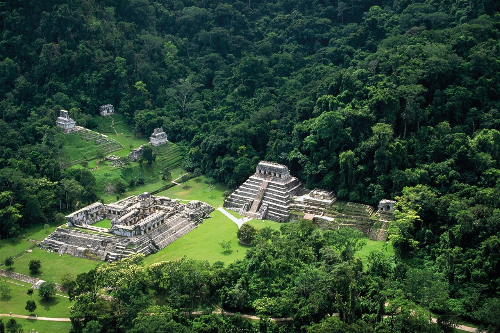

Palenque

Palenque significa “lugar cercado de una valla de madera o estacas”. La ciudad prehispánica data del siglo III, fue una de las ciudades más notables del mundo maya
Este Pueblo Mágico es un paraíso para los amantes de la arqueología, la historia y la naturaleza. Primero, es vecino al sitio arqueológico de Palenque; y segundo, es un espacio privilegiado para explorar la selva, descubrir cascadas o deleitarse con la vista de lagunas y la fauna de la región. Tal es la importancia del sitio arqueológico de Palenque que forma parte del Patrimonio de la Humanidad de la UNESCO desde 1987.
Palenque fue fundado por fray Pedro Lorenzo, a cierta distancia de las ruinas del mismo nombre en 1567. El padre dominico integró el pueblo con muchas familias choles dispersas en la Selva Lacandona. Se sabe que los nativos llamaban a Palenque, Otulún palabra de origen chol que significa "Sitio cercado o fortificado".
características:
En castellano, Palenque significa “lugar cercado de una valla de madera o estacas”. La ciudad prehispánica data del siglo III, fue una de las ciudades más notables del mundo maya; también actuó como centro ceremonial, gracias a los patronos mayas interesados en demostrar su poder. Fue una de las ciudades mayas más importantes de su tiempo, a la par de Calakmul y de Tikal. La población actual está compuesta por pueblos originarios como chol, tzeltal y lacandón.
Palenque se ubica en el corazón del sureste de México, al noreste del estado de Chiapas, en una zona de selva tropical alta donde abundan cascadas y ríos. Su clima es tropical, cálido, húmedo y lluvioso; con temperatura media de 27º C y picos de 36º C. En la cocina local predomina el sabor autóctono, como los tamales chiapanecos, el pato en chirmol, el pescado sudado o el salpicón de venado. Para beber se sugiere probar el tascalate, el pozol o la chica; y como postre, prueba los dulces elaborados a base de miel de abeja.
Entre las artesanías de la región destacan prendas exquisitamente bordadas, cerámica y joyería trabajada en ámbar. Participa en el Programa Pueblos Mágicos desde 2015.
Se ubica a 2 hrs. de Villahermosa, a 4:30 hrs. de Campeche; y a 6 hrs. de Tuxtla Gutiérrez. El nuevo Aeropuerto Internacional de Palenque se encuentra a sólo 10 minutos de la ciudad de Palenque.
Palenque se ubica al norte del estado. Limita al norte con Tabasco y los municipios de Catazajá y La Libertad; al este con La Libertad, el estado de Tabasco y la República de Guatemala; al sur con Ocosingo, Chilón y Salto de agua; y al oeste con Salto de Agua y el estado de Tabasco.
haga click para buscar direccion de palenque